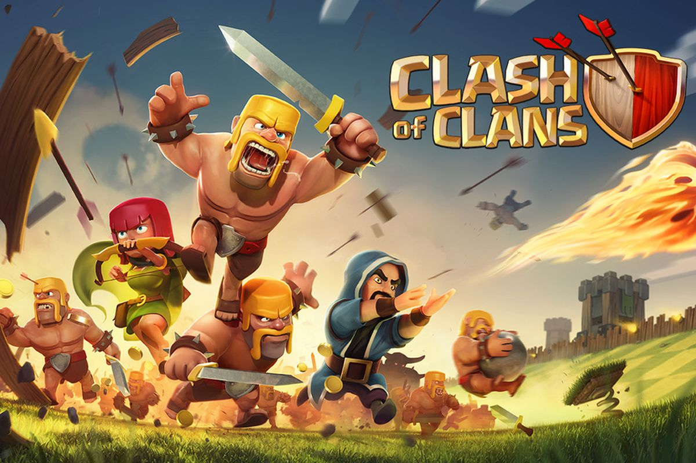

Clash Of Clans
How to play Clash of Clans
What you need to know
Clash of Clans can be a complex game, but the built-in tutorial is easy to follow. The key to the game is to build a base surrounded by great defenses while raiding other players’ bases for loot and trophies. The loot allows you to upgrade your base or create stronger troops. As you level up, you may choose to join a “clan” of other players to battle rival clans around the world.
When you first start playing, your base is defended by a shield. The shield gives you a 72-hour window of safety when enemies can’t attack your base and steal your loot. If your shield is down, attackers could swoop in, but the shield will return to defend you after a catastrophic loss.
How do you upgrade your squad? Clash has one currency and three resources within the game. Gems are the “money” in the game. You’ll earn them by removing obstacles around your base. If you’re less patient, you can purchase them in-game with real money. Think of gems as a shortcut to repair your heroes and speed up construction.
Clash has three resources: gold, elixir, and dark elixir. All three can be “mined” with structures in your base or looted from other players. Gold is used to create buildings. You’ll spend elixir to create your troops and helpful spells. Dark elixir appears later in the game, unlocking even more powerful elements. Bottom line: Grab all of this stuff as often as possible and you’ll get more powerful.